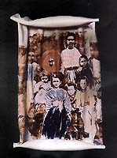
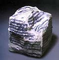
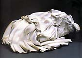
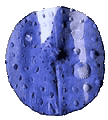

| Maria
Geszler-Garzuly
Hungarian ceramist
Hungarian
ceramist Maria Geszler-Garzuly completed her studies at the Academy
of Art and Craft in Budapest in 1965. She worked as an industrial
designer between 1966-80, setting up her own studio in 1975. Geszler-Garzuly
has become widely known for her humanoid bottle shapes, onto which
she transfers surface designs and which are then salt-glazed. She
has won several awards, including the international competition
'Salt-glazed Ceramics' in 1993, a bronze medal at the Mino International
Ceramics Award in 2003 and a bronze medal at the Taipei Ceramics
Award in 2004.

Artist's Statement
"Portraits - china portraits - as my diaries - for decades
I have experimented to express my own personality in simple, concentrated
"minimal art" form (technical difficulties, too big forms
for china, high temperature (1300C), wood heated killn, saltglaze)
and with glowing contents (Poetry of industrial landscape, Rousseau's
garden, Lonely bank, Blue bush etc).
These figures I imagine living in the landscape, hiding in a bush,
lying in the grass, standing in water. In the exhibition hall, on
plinths, I see a dissonant phenomenon.
- That's why I tried to put them on ceramic "stones"
or to build half of them in stone-forms - so that they may return
to nature even in these sterile surroundings.
- A new formal problem started to excite me - the contradiction
of hard and soft, natural and constructed.
- And referring to the contents: the unrevelling cloudy ideas.
How to create an object out of sculpture born within us? How had
these happened before? Michelangelo went to Carrara and was standing
in the quarry in the glowing heat - finally he pointed at the
marble rock at the side of the mountain and said "that's
my David".
He implanted his perfect vision of David into the amorph marble
rock or otherwise the white gleaming marble formed Michelangelo's
spirit?
Thus I feel my way towards the surrealistic transformation of stones
and statues, china stones, not heavier than some grams, egg-shell
white with sieved pictures. But what kind of pictures?
-----------------------
I
am from Eastern Europe, the daughter of a ideological and social
experiment gone wrong - socialism.
Having graduated at the College of Applied Art's in Budapest,
I started to work as designer in a pure, neglected "out of
the world" ceramic factory.
But what a factory?
From this time on I started to feel the smoke of the cooling towers,
the lines of the factory's broken windows, the conveyer belts, the
women metal-workers with their varicose legs, the electricity centers,
the crane-cemetery and the loneliness of the huge, badly lit factory
halls. The poles, the bottom of aeroplanes, the sky red from poisonous
gas, had a special meaning for me. I started to photograph these
impressions and transfered them on via sieves onto china, I formed
and crumpled them together with the material.
I was lead by two feelings: adoration and horror. Admiration and
appreciation at the sight of human spirit and technique and fear
and anxiety at the sight of those huge, isolated, creaking steel
plants.
What will the future hold?
Text & images ©.
Courtesy Maria Geszler-Garzuly.
The Hungarian Connection
The International Ceramics Studio
DVD Review: Eva Zeisel - Throwing Curves
More Artists of the Week
More Articles |
{kind=link}
{kind=link}
{kind=link}
{kind=link}